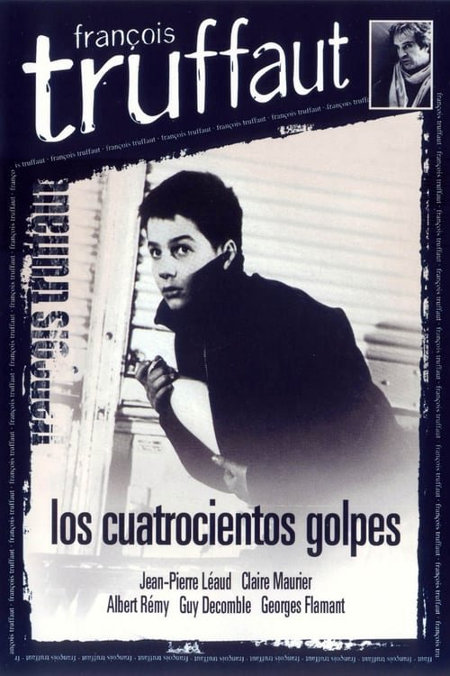

Los cuatrocientos golpes (1959)

Plataforma: Amazon Prime Video
Puntuación IMDb: 8.1/10
Duración: 1h 22m
Género:
Sinopsis Rápida
Antoine Doinel, un niño incomprendido, se rebela contra la sociedad y busca su lugar en un mundo que no lo comprende.
Sinopsis Detallada
Esta obra maestra de François Truffaut sigue a Antoine, un niño incomprendido que se enfrenta a la incomprensión familiar y escolar. Su travesía es un retrato realista y conmovedor de la infancia y la adolescencia, explorando temas de libertad y rebeldía. El final icónico de la película dejó una huella imborrable en la historia del cine.
¿Por qué tenés que verla?
- Un clásico del cine que retrata con sensibilidad la experiencia de la adolescencia.
- La actuación naturalista de Jean-Pierre Léaud y la dirección innovadora de Truffaut.
- Su impacto en la Nouvelle Vague francesa y en el cine independiente.
- Una historia atemporal que sigue resonando con el público.
Idea Extra
Comparación de 'Los cuatrocientos golpes' con otras películas sobre la adolescencia.
{{CONTENIDO_RELACIONADO}}